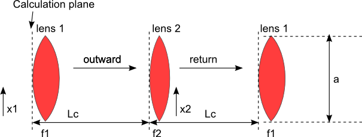
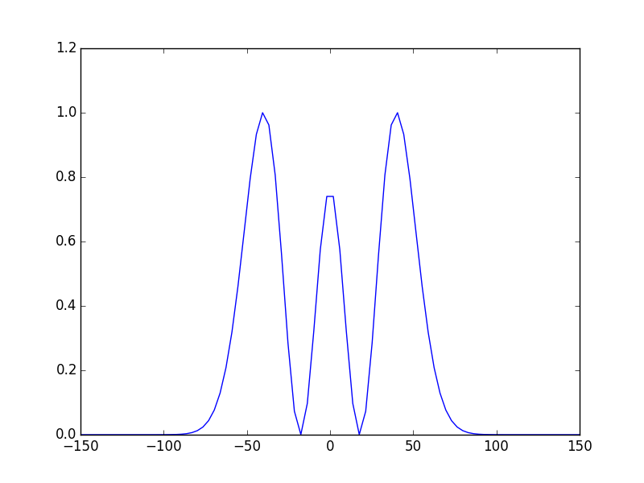
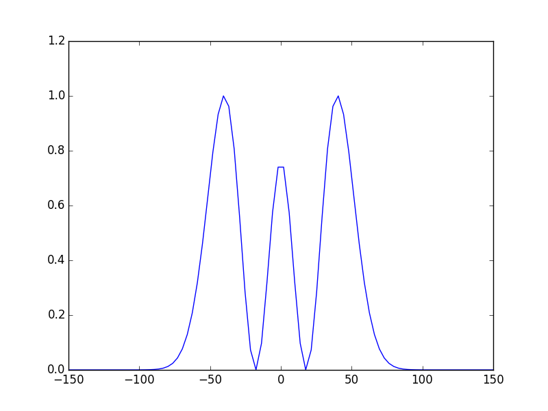
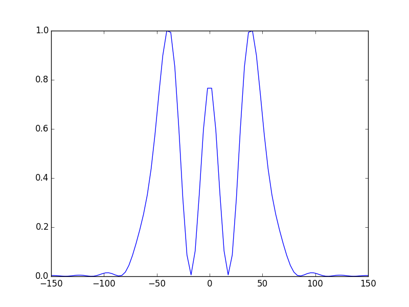
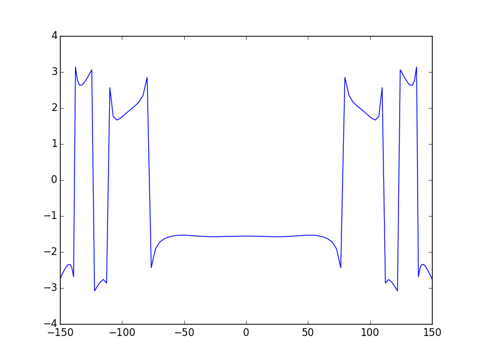
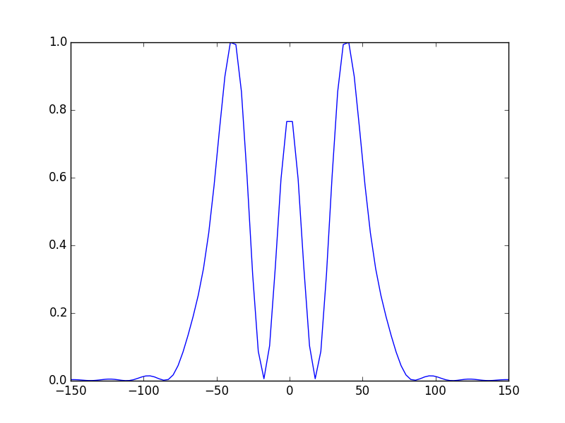
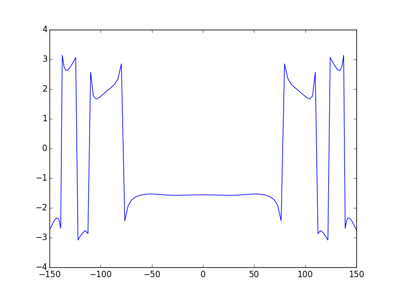

Tutorial 2 - General 1D cavity¶
In this part we see how to define a general cavity system using a more general method: ABCD matrices, this is a more general and powerful way to define multi-elements cavity with different arrangements (V-shaped, bow-tie...etc), and it is the preferable way of defining optical cavities in OpenCavity.
In this tutorial we show three ways of defining a general optical cavity using the function build_1D_cav_ABCD(a,npts,A,B,C,D). You may wonder why learn 3 ways when we can just getting things done by learning one method and stick with it?
The reason is that every one of the three techniques we show here, is best suited for some particular situations, as we will see in next tutorials. These three ways of defining a general cavity design we address here are:
- Using the global ABCD matrix of the cavity.
- Using g1,g2 parameters of the cavity.
- Using phase masks and cascading subsystems
System definition using ABCD matrices¶
Let’s start now and take the same cavity system of the previous tutorial. This simple two-mirrors linear resonator (radius of curvature R1 and R2) represented below is equivalent to a periodic sequence made of two thin lenses with focal lengths equal to f1 (=R1/2) and f2 (=R2/2), spaced by a distance Lc.
The T transfer matrix of such a system is
Defining this system is quite straightforward , all what we have to do for now is calculating the global matrix.
In [1]: import opencavity.modesolver as ms; #importing the opencavity module
In [2]: R1=1e13; R2=10*1e3; Lc=8*1e3; npts=120; a=150; # cavity parameters
In [3]: A1=1; B1=0; C1=-2/R1; D1=1; #concave mirror M1
In [4]: A2=1; B2=Lc; C2=0; D2=1; #propagation distance Lc
In [5]: A3=1; B3=0; C3=-2/R2; D3=1; #concave mirror M2
In [6]: A4=1; B4=Lc; C4=0; D4=1; #propagation distance Lc
Making the matrices using numerical python:np , note here that we use numerical python from inside imported opencavity module that we called ms,
this is possible because numerical python or numpy is already imported inside opencavity, but importing it again at the beginning of the script will
work too as we did in other tutorials. The same holds for matplotlib module imported as plt in opencavity.
In [7]: M1=ms.np.array([[A1,B1 ],[C1, D1]]);
In [8]: M2=ms.np.array([[A2, B2],[C2, D2]]);
In [9]: M3=ms.np.array([[A3, B3],[C3, D3]]);
In [10]: M4=ms.np.array([[A4, B4],[C4, D4]]);
Calculating the dot product (matrix of the global system)
In [11]: M=M4.dot(M3).dot(M2).dot(M1) # calculating the global matrix (note the inversed order)
Till now we haven’t use the OpenCavity package yet and we haven’t done any mode calculation, all what we did is some matrix manipulation to create the ABCD matrix of the cavity. Let’s get the elements of this matrix and enter them into a solver system, we call it opsys (for optical system)
In [12]: A=M[0,0]; B=M[0,1]; C=M[1,0]; D=M[1,1]
In [13]: opsys=ms.CavEigenSys() #creating a ms object
In [14]: opsys.build_1D_cav_ABCD(a,npts,A,B,C,D) # enter the ABCD matrix and build the system-Kerenl
To find and show the modes of the cavity
In [15]: opsys.solve_modes() # by default find the 30 first modes
running the eigenvalues solver...
In [16]: opsys.show_mode(0) # the fundamental mode E-field
In [17]: opsys.show_mode(2,what='intensity')
In [18]: opsys.show_mode(0,what='phase')
 

{kind=link}

voilà! these figures show the E-field of the fundamental mode and the intensity of the 2nd one. The third figure shows the phase of the fundamental mode.
The cleaned code¶
# -*- coding: utf-8 -*-
'''
@author: M.seghilani
'''
import opencavity.modesolver as ms
R1=1e13; R2=10*1e3; Lc=8*1e3; npts=120; a=150; # cavity parameters
R1=20e3
A1=1; B1=0; C1=-2/R1; D1=1; #concave mirror M1
A2=1; B2=Lc; C2=0; D2=1; #propagation
A3=1; B3=0; C3=-2/R2; D3=1; #concave mirror M2
A4=1; B4=Lc; C4=0; D4=1; #propagation
M1=ms.np.array([[A1,B1 ],[C1, D1]]); M2=ms.np.array([[A2, B2],[C2, D2]]);
M3=ms.np.array([[A3, B3],[C3, D3]]); M4=ms.np.array([[A4, B4],[C4, D4]]);
M=M1.dot(M2).dot(M3).dot(M4) # calculating the global matrix
A=M[0,0]; B=M[0,1]; C=M[1,0]; D=M[1,1]
opsys=ms.CavEigenSys();
opsys.build_1D_cav_ABCD(a,npts,A,B,C,D)
opsys.solve_modes()
opsys.show_mode(0)
opsys.show_mode(2,what='intensity')
opsys.show_mode(0,what='phase')
ms.plt.show()
System definition using g1, g2 parameters¶
g1 and g2 parameters are usually used to study the stability of resonators, they are defined as g1=1-Lc/R1, g2=1-Lc/R2. the resonator is sable if 0<g1*g2 <1. The global ABCD matrix of a the resonator can be written in terms of g1, g2 as follows:
let’s try it:
In [19]: import opencavity.modesolver as ms; #importing the opencavity module
In [20]: R1=1e13; R2=10*1e3; Lc=8*1e3; npts=120; a=150; # cavity parameters
In [21]: g1=1-Lc/R1; g2=1-Lc/R2;
In [22]: A=2*g1*g2-1; B=2*g2*Lc; C=2*g1/Lc; D=2*g1*g2-1;
In [23]: opsys=ms.CavEigenSys(); # create a solver object
In [24]: opsys.build_1D_cav_ABCD(a,npts,A,B,C,D) # build the cavity kernel
In [25]: opsys.solve_modes() # solve the modes
running the eigenvalues solver...
In [26]: opsys.show_mode(0); ms.plt.grid() # show the first mode
In [27]: opsys.show_mode(0,what='phase')
In [28]: ms.plt.show()


We obtain the same results! , the advantage of this method is that the code is cleaner and easy to read as we don’t manipulate matrices. Thus the written code is quite simple, we can clearly distinguish the needed steps to build and solve the cavity:
- import the module
- create a solver object
- build the cavity kernel
- solve the modes
- show the modes
cascading subsystems¶
Calculating the global transfer matrix of an optical cavity is a straightforward method to define it and solve the eigenmodes and eigenvalues, however, sometimes it is useful to split a global complex system to several subsystems, do some transformation on them, then cascade these subsystems to make a global one. This may be inevitable when you want to introduce an amplitude or phase function somewhere inside the cavity, such as an aperture. This is covered in more details in the following tutorials, but for now let’s see how to define and solve the modes of the same optical cavity by splitting the global system into two subsystems and cascading them.
We take the same matrices of the first example:
In [29]: import opencavity.modesolver as ms
In [30]: R1=1e13; R2=10*1e3; Lc=8*1e3; npts=120; a=150; # cavity parameters
In [31]: A1=1; B1=0; C1=-2/R1; D1=1; #concave mirror M1
In [32]: A2=1; B2=Lc; C2=0; D2=1; #propagation distance Lc
In [33]: A3=1; B3=0; C3=-2/R2; D3=1; #concave mirror M2
In [34]: A4=1; B4=Lc; C4=0; D4=1; #propagation distance Lc
Making the matrices using numerical python:np.
In [35]: M1=ms.np.array([[A1,B1 ],[C1, D1]]);
In [36]: M2=ms.np.array([[A2, B2],[C2, D2]]);
In [37]: M3=ms.np.array([[A3, B3],[C3, D3]]);
In [38]: M4=ms.np.array([[A4, B4],[C4, D4]]);
Calculating the dot product (matrix of 2 subsystems)
In [39]: M11=M2.dot(M1); # sub-system 1
In [40]: M22=M4.dot(M3); # sub-system 2
In [41]: A11=M11[0,0]; B11=M11[0,1]; C11=M11[1,0]; D11=M11[1,1] # getting the members of subsystem 1 matrix
In [42]: A22=M22[0,0]; B22=M22[0,1]; C22=M22[1,0]; D22=M22[1,1] # getting the members of subsystem 2 matrix
As in the first example, till now we have just manipulated matrices to create two ABCD matrices representing two subsystems of the cavity. Let’s create and build these subsystems:
In [43]: sys1=ms.CavEigenSys();
In [44]: sys2=ms.CavEigenSys();
In [45]: sys1.build_1D_cav_ABCD(a,npts,A11,B11,C11,D11)
In [46]: sys2.build_1D_cav_ABCD(a,npts,A22,B22,C22,D22)
In [47]: sys1.cascade_subsystem(sys2) # cascading subsystems, here: Global Kernel= Kernel2*Kernel1)
systems cascaded.
In [48]: sys1.solve_modes()
running the eigenvalues solver...
In [49]: sys1.show_mode(0) # the fundamental mode E-field
In [50]: sys1.show_mode(2,what='intensity')
In [51]: sys1.show_mode(0,what='phase')
 



{kind=link}
{kind=link}
Comparison with the first method¶
As we can see we the calculated modes looks like the calculated with one general ABCD system, however we can see some slight differences, for example, small ripples on each side of the mode and on the phase of the beam. This is the effect of the aperture. These effects didn’t not appeared with the previous methods. This is explained by the fact that the field is calculated once on the starting plane only (after one round-trip). Therefore, even if at a given location in the system the beam is magnified we don’t need larger calculation area as long as the beam is re-focused before the last plane, consequently, the sampling rate and the size of the calculation zone are determined according to the requirements of the first and the last plane only. This is a major advantage of the ABCD matrix formalism. However, if for some reason we need to calculate the field at intermediate plane we have to take the size of the field at this plane into account. To get rid of the ripples in the example we can merely use a larger aperture size (a=200 for example)
In [52]: a=200;
In [53]: sys1.build_1D_cav_ABCD(a,npts,A11,B11,C11,D11)
In [54]: sys2.build_1D_cav_ABCD(a,npts,A22,B22,C22,D22)
In [55]: sys1.cascade_subsystem(sys2)
systems cascaded.
In [56]: sys1.solve_modes()
running the eigenvalues solver...
In [57]: sys1.show_mode(0) # the fundamental mode E-field
In [58]: sys1.show_mode(2,what='intensity')
In [59]: sys1.show_mode(0,what='phase')


This is much better, note that what happens in the phase map outside the mode region does not matter since there is no E-field there.